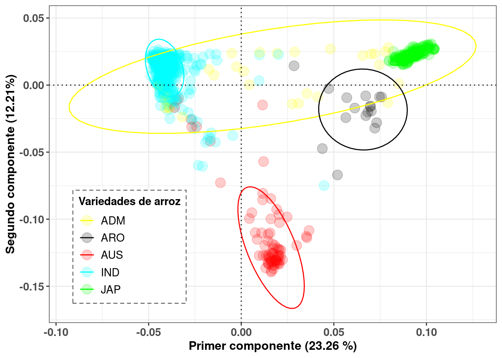
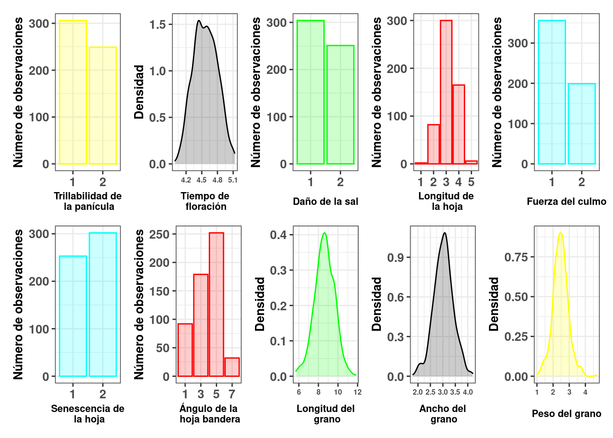

Los datos
En este tutorial usaré los conjuntos de datos del Rice SNP-Seek Database, el cual contiene información sobre genotipados de SNP y fenotipos de distintas variedades de arroz (Oryza sativa L.).
Descripción de los datos
Al realizar un análisis de componentes principales sobre los datos de genotipado de SNP, se observaron diferentes grupos varietales de arroz (Figure 1). La variedad indica fue la variedad seleccionada para llevar a cabo el estudio ya que fue el grupo varietal con mayor número de individuos genotipados (451 individuos de un total de 738).

De entre los datos de fenotipos disponibles (Figure 2), se eligió el carácter tiempo de floración, ya que se observó que en este carácter la predicción genómica podría funcionar mejor. Estos datos fenotípicos se centraron (restando la media general) y estandarizaron (dividiendo por la desviación estándar).

Control de calidad
Los datos fueron sometidos previamente a procedimientos de control de calidad, eliminando loci con una frecuencia del alelo menor inferior a 0.05 y con una tasa de ausencia mayor a 0.01, todo esto usando Plink (Purcell et al. 2007).
Luego de dicho control de calidad, el conjunto de datos resultante consistió de 100.231 SNP. A continuación podra descargar los datos en formato variant call luego del control de calidad.